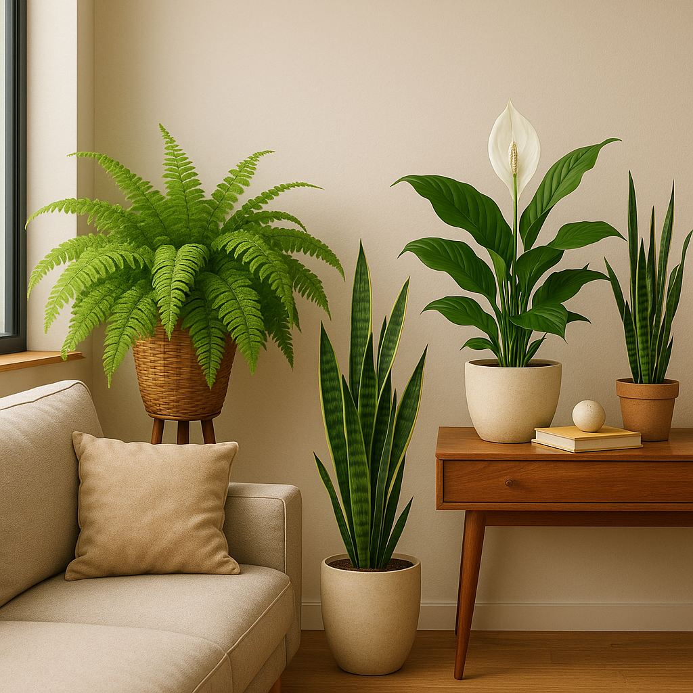

üå± Top 5 plantas que purificam o ar e protegem seu lar (mas nem sempre seu gato)
Nem todas as plantas que purificam o ar são boas companheiras para quem tem gatos. Algumas se destacam por filtrar toxinas e melhorar a qualidade do ar, mas escondem um lado perigoso para os felinos. Este post apresenta as cinco queridinhas da purificação — com alertas importantes para quem vive com gatos.
1. Espada-de-São-Jorge ⚠️ Uma das campeãs de purificação segundo a NASA. É resistente, elegante e ótima para ambientes com pouca luz. Mas é tóxica para gatos.
2. Jiboia ⚠️ Cresce fácil, se adapta bem e tem folhagens decorativas. Excelente para a qualidade do ar, porém também tóxica para pets.
3. Areca-bambu ✅ Bela, volumosa e segura para gatos. Uma das melhores opções para quem quer purificar o ar com paz de espírito. Precisa de luz filtrada e solo levemente úmido.
4. Palmeira-ráfis ✅ Refinada e compacta. Além de segura para os gatos, é ótima para ambientes internos e filtragem de poluentes como formaldeído.
5. Zamioculca ⚠️ Moderna, robusta e popular em escritórios. Mas é tóxica para animais e deve ser evitada em casas com gatos curiosos.
üåø Escolher plantas vai al√©m da est√©tica. Com um pouco de pesquisa, √© poss√≠vel ter um ambiente lindo, saudável e seguro para todos os moradores da casa ‚Äî inclusive os de quatro patas.
← Voltar para o blog